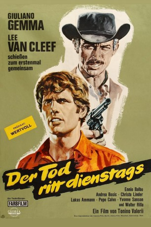
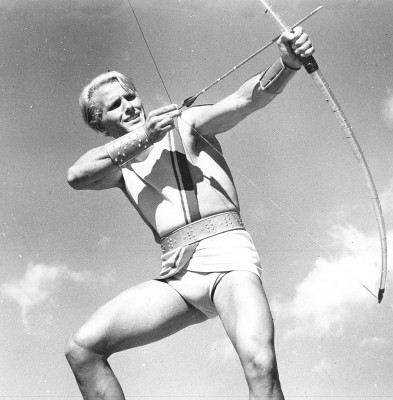
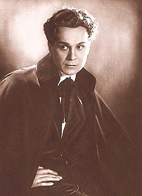
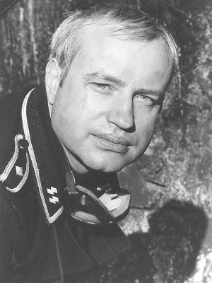
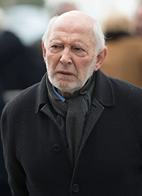

#8656 Der Tod ritt dienstags
Alternativ: Day of Anger (Englischer Titel)
 
 IMDB-Wertung: 7.1 / 10
IMDB-Wertung: 7.1 / 10  Metascore: 0
Metascore: 0 
Der junge Scott Mary wird aufgrund des Umstands, dass sein Vater unbekannt ist, von den Bewohnern der Kleinstadt Clifton als Fußabtreter benutzt und darf allenfalls schmutzige Aufräumarbeiten verrichten. Das ändert sich, als der alternde Revolverheld Frank Talby in die Stadt kommt und Gefallen an Scott findet. Talby nimmt Scott unter seine Fittiche, bildet ihn zum Scharfschützen aus und schwingt sich nicht zuletzt mit Scotts Hilfe zum Herrscher über Clifton auf. Schließlich muss sich Scott entscheiden, wie weit er in seiner Loyalität zu Talby gehen will.
Jahr: 1967
Dauer: 113 Minuten
FSK: 16
Land: Italien Studio: GloriaTonspuren:
Untertitel: Deutsch,
Auflösung: 1080p (1920x816) Größe: 8960 MB
Genre: Action, Western
Regisseur: Tonino Valerii
Drehbuch: Ernesto Gastaldi
Soundtrack: Riz Ortolani
Darsteller:
-  Giuliano Gemma als Scott Mary
 Lee Van Cleef als Frank Talby
Lee Van Cleef als Frank Talby-  Walter Rilla als Murph Allan Scott
- Christa Linder als Gwen
-  Karl-Otto Alberty als Blonde Deputy with Harmonica
- Ferruccio Viotti als Sam Corbitt - Barber
- Yvonne Sanson als Vivien Skill
-  Álvaro de Luna als Wild Jack's Henchman (uncredited)
- Paul Naschy als (uncredited)
 Ricardo Palacios als Bowie Cantina Owner (uncredited)
Ricardo Palacios als Bowie Cantina Owner (uncredited) Romano Puppo als Hart Perkins (uncredited)
Romano Puppo als Hart Perkins (uncredited)- Ennio Balbo als Turner - Banker
- Lukas Ammann als Judge Cutcher
- Andrea Bosic als Abel Murray
- José Calvo als Blind Bill
- Giorgio Gargiullo als Sheriff Nigel
- Anna Orso als Eileen Cutcher
- Nino Nini als Doctor Cullen
- Virgilio Gazzolo als Mr. Barton - Storekeeper
- Eleonora Morana als Mrs. Barton
- Benito Stefanelli als Owen White - Killer
- Franco Balducci als Slim
- Christian Consola als
- Nazzareno Natale als Wild Jack's Henchman
- Paolo Magalotti als Deputy Cross
- Gianni Di Segni als
- Román Ariznavarreta als Wild Jack's Henchman (uncredited)
- Mirko Baiocchi als Man in Saloon (uncredited)
- Giancarlo Bastianoni als Talby's Henchman (uncredited)
- Manuel Bermúdez 'Boliche' als Wild Jack Henchman (uncredited)
- Dolores Calò als Townswoman (uncredited)
 Omero Capanna als Perkins' Henchman (uncredited)
Omero Capanna als Perkins' Henchman (uncredited)- Franz Colangeli als Player in Saloon (uncredited)
- Antonio Danesi als Coachman (uncredited)
- Raniero Dorascenzi als Man in Saloon (uncredited)
- Fulvio Esposti als Player in Saloon (uncredited)
- Margherita Horowitz als Card Player in Talby's Saloon (uncredited)
- Mauro Mannatrizio als Mackenzie Perkins (uncredited)
- Edward Mannix als Judge Cutcher (uncredited)
- Enrico Marciani als Clifton Townsman (uncredited)
- Vladimir Medar als Old Man Perkins (uncredited)
- Mario Meniconi als Bank Guard (uncredited)
 Fulvio Mingozzi als Turner's Assistant (uncredited)
Fulvio Mingozzi als Turner's Assistant (uncredited)- Enzo Mondino als Player in Saloon (uncredited)
- Al Mulock als Wild Jack (uncredited)
- Fulvio Pellegrino als Waiter in Talby's Saloon (uncredited)
- Dan Sturkie als Owen White (uncredited)
- Angelo Susani als Talby's Henchman (uncredited)
Datei: X:\HD-Western-1960-1979\Tod ritt dienstags, Der (1967, FSK16, 1920x816).mkv seit 13.04.2018
Festplatte: HD Eastern+Western
 Es gibt insgesamt 110 Filme in der Gruppe 'HD-Western-1960-1979'
Es gibt insgesamt 110 Filme in der Gruppe 'HD-Western-1960-1979'